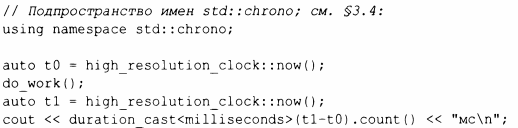

⇐13.6 Аллокаторы 13.8 Адаптация функций⇒
В заголовочном файле <chrono> стандартная библиотека предоставляет функциональные возможности для работы со временем. Например, вот основной способ замера прошедшего времени:
Часы возвращают time _point (момент времени). Вычитание двух time_point дает нам dura tion (промежуток времени). Различные часы дают свои результаты в разных единицах времени (используемые мною часы изменяют nanoseconds - наносекунды), так что обычно желательно конвертировать duration в известные единицы. Это делает duration_cast.
Не делайте никаких предположений об "эффективности" кода без предварительного измерения времени. Предположения о производительности являются наиболее ненадежными.
Чтобы упростить запись и минимизировать ошибки, заголовочный файл <chrono> предлагает суффиксы для единиц времени (§5.4.4). Например:
Эти суффиксы определены в пространстве имен std::chrono_1iterаls.
Элегантное и эффективное расширение для
Оно даже умеет обрабатывать дополнительные (високосные) секунды.